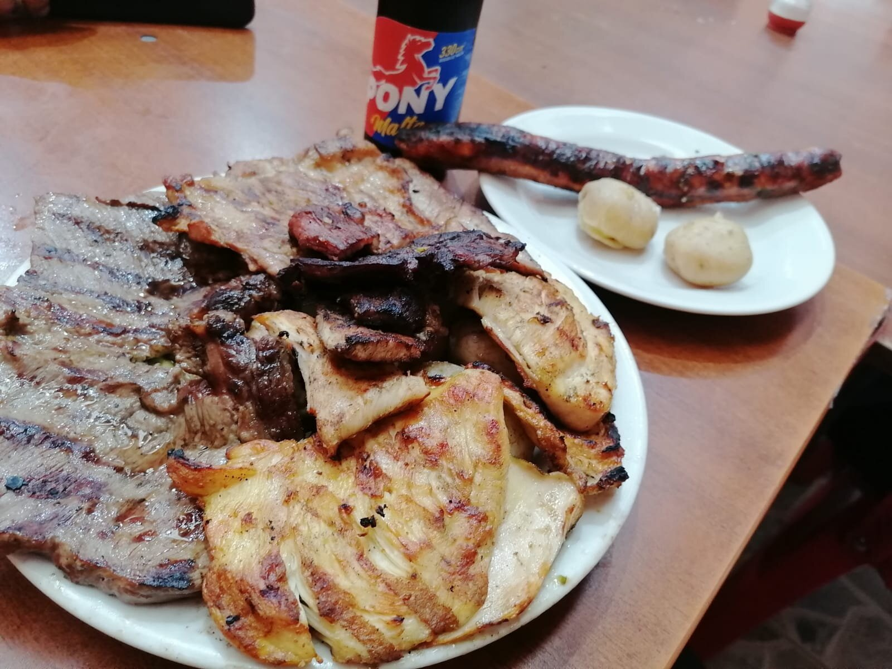
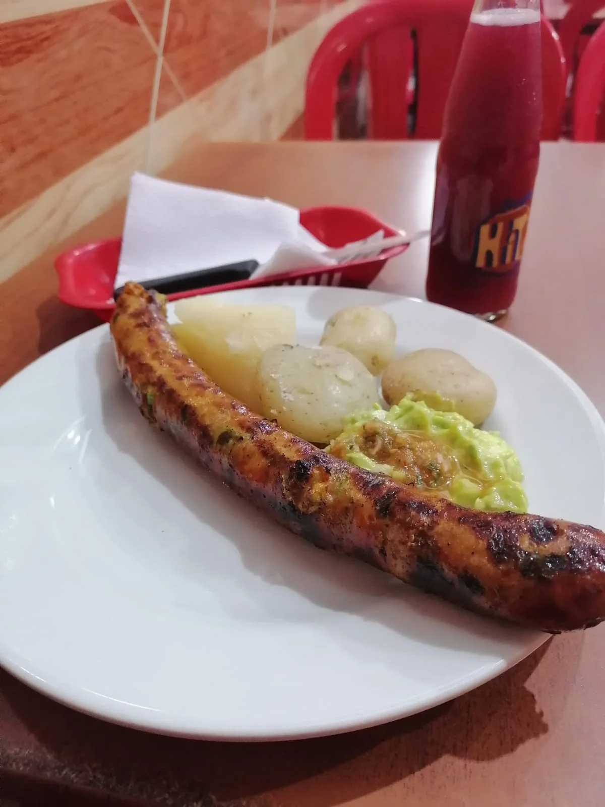
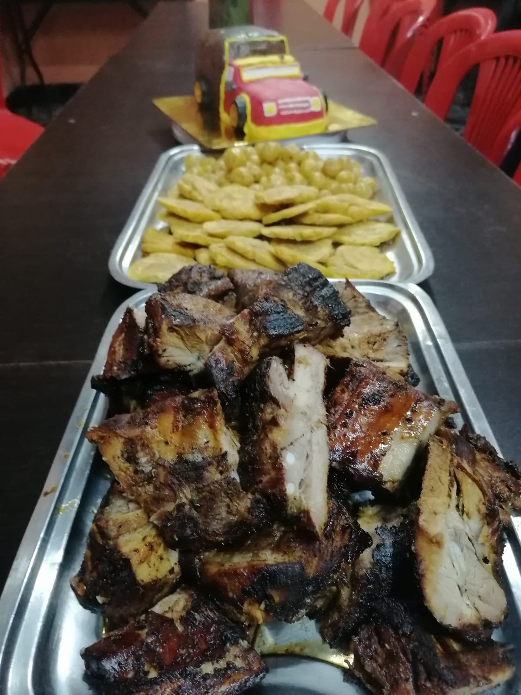
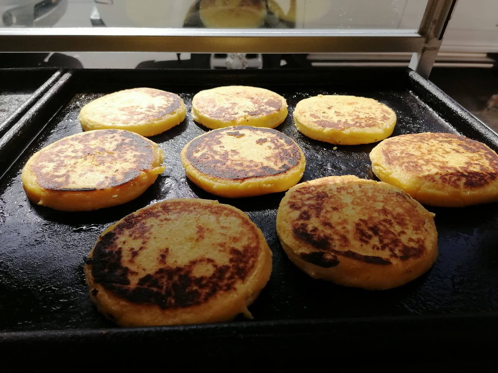

Menú
Nuestro plato especial
Mixta de tres carnes
Usted puede encontrar en este delicioso plato una porcion generosa de carne de res, cerdo
y pollo(750g) acompañado de papa salada,yuca al vapor y ensalada de
aguacate
Deliciosa carne asada al carbón

Longaniza de cerdo

Costillas de cerdo

Arepas de maiz peto
